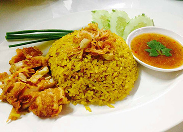
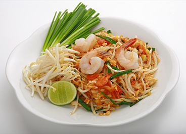
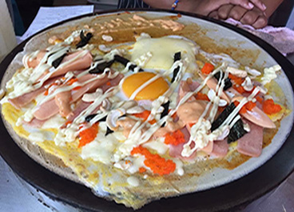

More Website Templates @ TemplateMonster.com - July 30, 2014!

This dish is very common one-dish meal in Thailand. If you have no idea what to eat in Thailand, you can try this dish everywhere in Thai restaurants. Normally the meat to use in this dish will be minced pork or minced chicken but you can change to anything that you like including seafood or veggies as well.

Crispy roast pork is a very popular dish in Thailand. It goes well with steamed rice, rice noodle (with sweet and sour dipping sauce)

Khao man gai is the Thai take on hainanese chicken rice, and it is a very common street food that can be found all over Thailand. It is commonly eaten at any time of day for breakfast, lunch or dinner. We have tried to make this recipe practical enough for you to make at home, whilst still retaining its great taste! You will need a rice cooker to prepare this recipe, however they are very cheap and make life so much easier!

The best known Thai spicy rice is chicken. Which match the type of rice birch of India. Chicken Rice is the only dish that contains a variety of spices. Fragrant Although chicken rice is not the only dish of Thai nationality. But it is mixed to become one of the most popular Thai food.

Yak Soba is an incredibly simple and incredibly fast food. Nowadays, everything comes with the seasoning you should use, so do not miss the great opportunities to use and add to your favorite season.

Do you want to try something exotic and spicy? Thai food is recommended to you. Eating Thai food, you will not only enjoy its delicious tastes, but you will also get benefit from the medicinal herbs used as ingredients in each dish. To acquaint you with herbal Thai dishes, let Thaiways present to you the recipes for top ten Thai dishes best loved by foreigners with the medicinal properties of herbs used in each dish.

Deep Fried Banana's delicious fried banana, MOLAN or MOLAN It is a sweet menu, whether it is with honey syrup or not eaten with crispy dipping. The taste of sweet bananas are good, crispy crust is very delicious.

A thick drink made from raw fruits or fresh vegetables mixed with other ingredients such as ice water or sweeteners. Suitable for getting rid of thirst in summer.

With simple ingredients that are bound to the beliefs of the agricultural society. Become a food and sweets that the whole world has to taste and enjoy. With basic ingredients that are easy to find, anyone can eat them. The key is to wear whatever they like.
 |
| 


{kind=link}
{kind=link}
{kind=link}